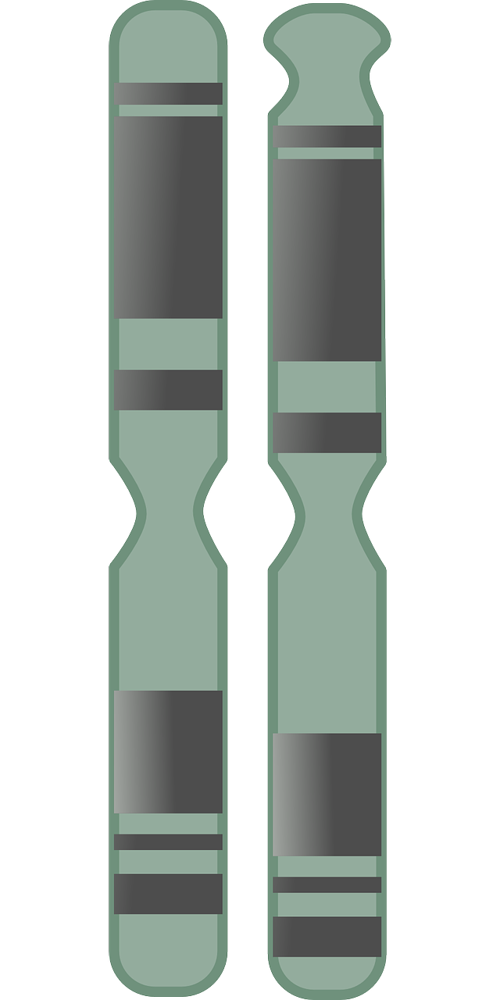
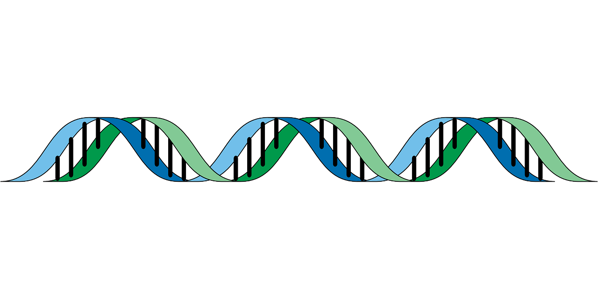

Cells
What are cells?
Cells are the basic building blocks of all living things. The human body is composed of trillions of cells. They provide structure for the body, take in nutrients from food, convert those nutrients into energy, and carry out specialized functions. Cells also contain the body’s hereditary material and can make copies of themselves.
Cells have many parts, each with a different function. Some of these parts, called organelles, are specialized structures that perform certain tasks within the cell. Human cells contain the following major parts, listed in alphabetical order:
- Cytoplasm
- Within cells, the cytoplasm is made up of a jelly-like fluid (called the cytosol) and other structures that surround the nucleus.
- Cytoskeleton
- The cytoskeleton is a network of long fibers that make up the cell’s structural framework.
- Endoplasmic reticulum (ER)
- This organelle helps process molecules created by the cell. The endoplasmic reticulum also transports these molecules to their specific destinations either inside or outside the cell.
- Golgi apparatus
- The Golgi apparatus packages molecules processed by the endoplasmic reticulum to be transported out of the cell.
- Lysosomes and peroxisomes
- These organelles are the recycling center of the cell. They digest foreign bacteria that invade the cell, rid the cell of toxic substances, and recycle worn-out cell components.
- Mitochondria
- Mitochondria are complex organelles that convert energy from food into a form that the cell can use.
- Nucleus
- The nucleus serves as the cell’s command center, sending directions to the cell to grow, mature, divide, or die.
- Plasma membrane
- The plasma membrane is the outer lining of the cell. It separates the cell from its environment and allows materials to enter and leave the cell.
- Ribosomes
- Ribosomes are organelles that process the cell’s genetic instructions to create proteins.
DNA
What is DNA?
DNA, or deoxyribonucleic acid, is the hereditary material in humans and almost all other organisms. Nearly every cell in a person’s body has the same DNA. Most DNA is located in the cell nucleus (where it is called nuclear DNA), but a small amount of DNA can also be found in the mitochondria (where it is called mitochondrial DNA or mtDNA). Mitochondria are structures within cells that convert the energy from food into a form that cells can use.
DNA bases pair up with each other, A with T and C with G, to form units called base pairs. Each base is also attached to a sugar molecule and a phosphate molecule. Together, a base, sugar, and phosphate are called a nucleotide. Nucleotides are arranged in two long strands that form a spiral called a double helix. The structure of the double helix is somewhat like a ladder, with the base pairs forming the ladder’s rungs and the sugar and phosphate molecules forming the vertical sidepieces of the ladder.

An important property of DNA is that it can replicate, or make copies of itself. Each strand of DNA in the double helix can serve as a pattern for duplicating the sequence of bases. This is critical when cells divide because each new cell needs to have an exact copy of the DNA present in the old cell.
GENE
What is a gene?

A gene is the basic physical and functional unit of heredity. Genes are made up of DNA. Some genes act as instructions to make molecules called proteins. However, many genes do not code for proteins.
In humans, genes vary in size from a few hundred DNA bases to more than 2 million bases. An international research effort called the Human Genome Project, which worked to determine the sequence of the human genome and identify the genes that it contains, estimated that humans have between 20,000 and 25,000 genes.
Every person has two copies of each gene, one inherited from each parent. Most genes are the same in all people, but a small number of genes (less than 1 percent of the total) are slightly different between people. Alleles are forms of the same gene with small differences in their sequence of DNA bases. These small differences contribute to each person’s unique physical features.
Scientists keep track of genes by giving them unique names. Because gene names can be long, genes are also assigned symbols, which are short combinations of letters (and sometimes numbers) that represent an abbreviated version of the gene name. For example, a gene on chromosome 7 that has been associated with cystic fibrosis is called the cystic fibrosis transmembrane conductance regulator; its symbol is CFTR.